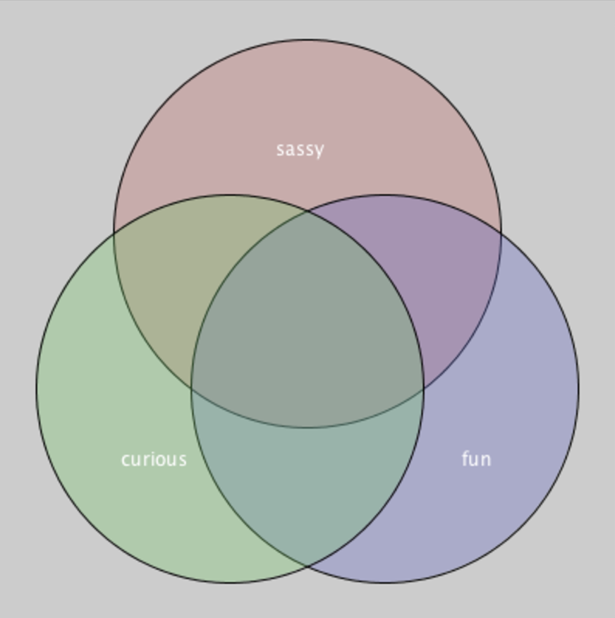

Venn Diagram of Me

We are going to make a Venn diagram that shows different parts of your personality!
- Create a new sketch in Processing and add setup() and draw() methods.
- Add three overlapping circles to your sketch.
- Give the circle nice colors using:
fill(int red, int green, int blue, int transparency);
- Label each circle with a part of your personality using:
text(“message”, int xPosition, int yPosition);